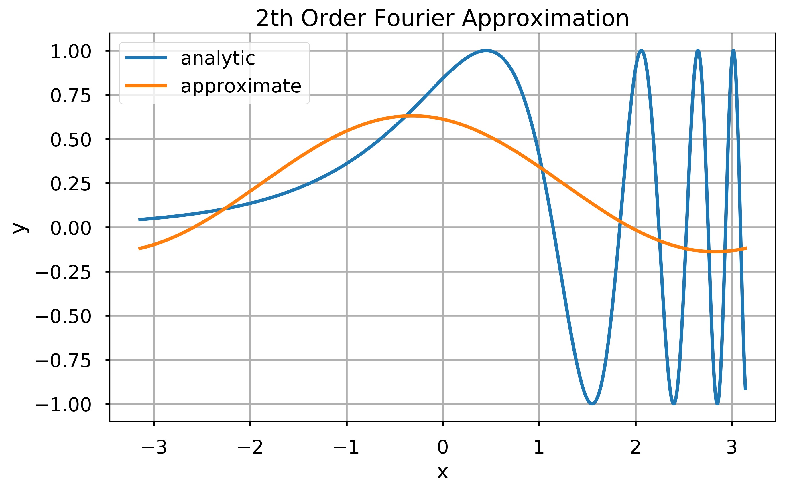
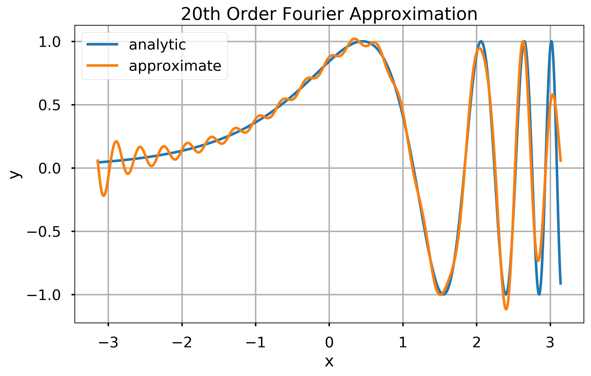
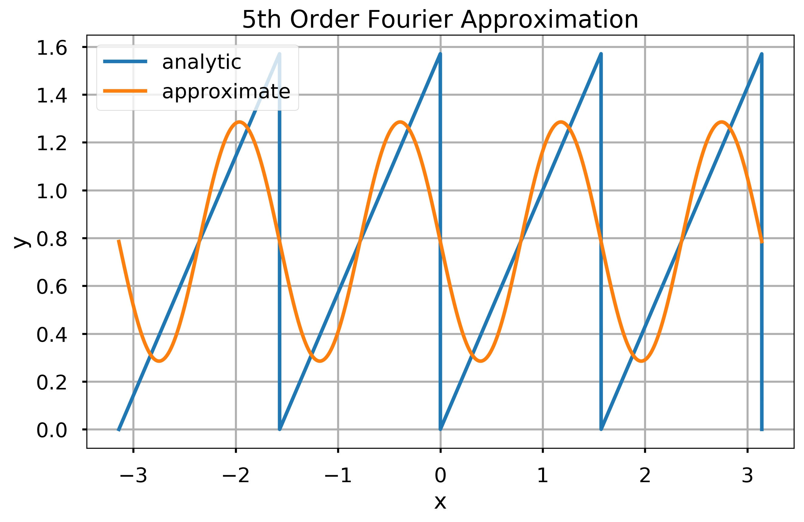
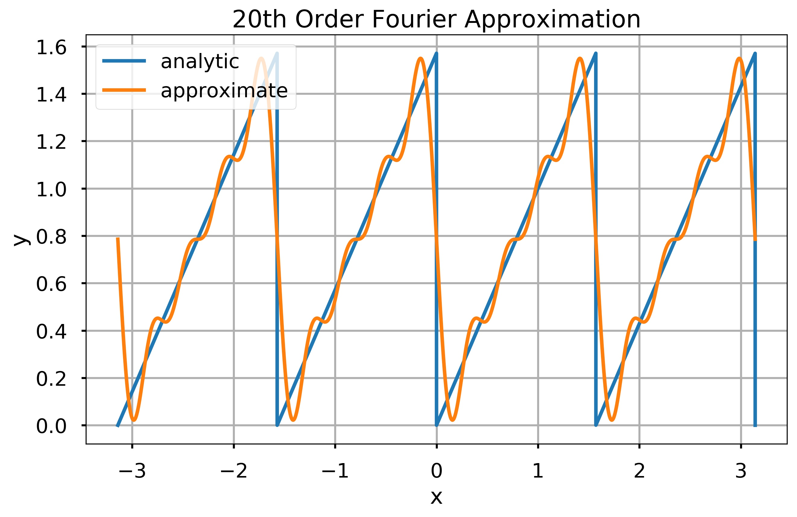
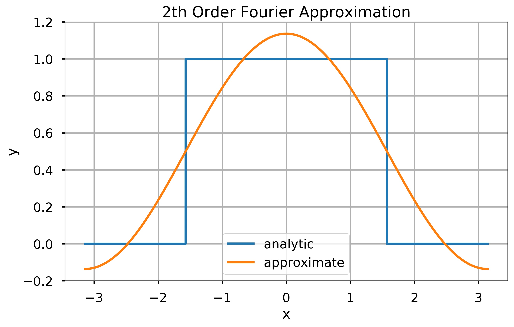
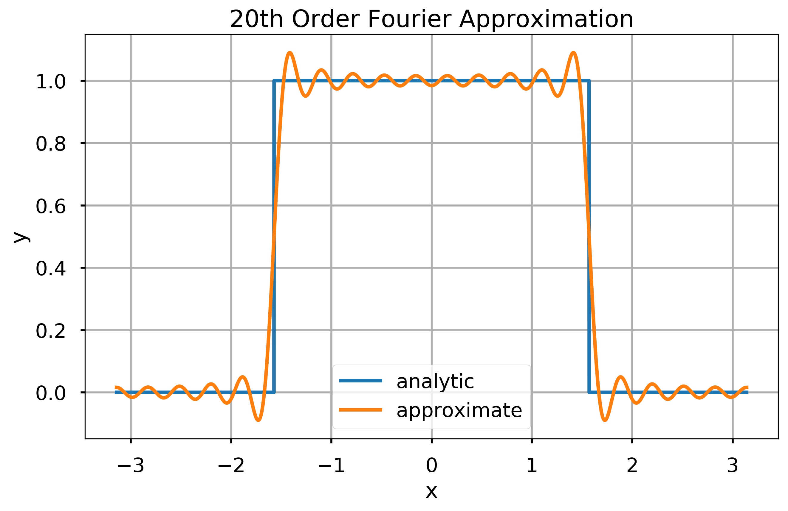

This notebook contains an excerpt from the Python Programming and Numerical Methods - A Guide for Engineers and Scientists, the content is also available at Berkeley Python Numerical Methods.
The copyright of the book belongs to Elsevier. We also have this interactive book online for a better learning experience. The code is released under the MIT license. If you find this content useful, please consider supporting the work on Elsevier or Amazon!
< 21.5 Computing Integrals in Python | Contents | CHAPTER 22. Ordinary Differential Equations (ODEs): Initial-Value Problems >
Summary¶
Explicit integration of functions is often impossible or inconvenient, and numerical approaches must be used instead.
The Riemann Integral, Trapezoid Rule, and Simpson’s Rule are common methods of approximating integrals.
Each method has an order of accuracy that depends on the approximation of the area below the function.
Problems¶
Write a function \(my\_int\_calc(f, f0, a, b, N, option)\), where \(f\) is a function object, \(a\) and \(b\) are scalars such that a < b, \(N\) is a positive integer, and \(option\) is the string ‘rect’, ‘trap’, or ‘simp’. Let \(x\) be an array starting at \(a\), ending at \(b\), containing \(N\) evenly spaced elements. The output argument, \(I\), should be an approximation to the integral of \(f(x)\), with initial condition \(f0\), computed according to the input argument, \(option\).
Write a function \(my\_poly\_int(x, y)\), where \(x\) and \(y\) are one-dimensional arrays of the same size, and the elements of \(x\) are unique and in ascending order. The function \(my\_poly\_int\) should (1) compute the Lagrange polynomial going through all the points defined by \(x\) and \(y\) and (2) return an approximation to the area under the curve defined by \(x\) and \(y\), \(I\), defined as the analytic integral of the Lagrange interpolating polynomial.
When will \(my\_poly\_int\) work worse than the trapezoid method?
Write a function \(my\_num\_calc(f, a, b, n, option)\), where the output \(I\) is the numerical integral of \(f\), a function object, computed on a grid of \(n\) evenly spaced points starting at \(a\) and ending at \(b\). The integration method used should be one of the following strings defined by option: ‘rect’, ‘trap’, ‘simp’. For the rectangle method, the function value should be taken from the right endpoint of the interval. You may assume that \(n\) is odd.
Warning: In the reader, the \(x\) subscripts start at \(x_0\) not \(x_1\); take note of this when programming your loops. The odd-even indices will be reversed. Also the \(n\) term given in Simpsons Rule denotes the number of subintervals, not the number of points as specified by the input argument, \(n\).
Test Cases:
In: f = lambda x: x**2
my_num_int(f, 0, 1, 3, 'rect')
Out: 0.625
In: my_num_int(f, 0, 1, 3, 'trap')
Out: 0.375
In: my_num_int(f, 0, 1, 3, 'simp')
Out: 0.3333333333333333
In: f = lambda x: np.exp(x**2)
my_num_int(f, -1, 1, 101, 'simp')
Out: 2.9253035883926493
In: my_num_int(f, -1, 1, 10001, 'simp')
Out: 2.925303491814364
In: my_num_int(f, -1, 1, 100001, 'simp')
Out: 2.9253034918143634
A previous chapter demonstrated that some functions can be expressed as an infinite sum of polynomials (i.e. Taylor series). Other functions, particularly periodic functions, can be written as an infinite sum of sine and cosine waves. For these functions,
It can be shown that the values of \(A_n\) and \(B_n\) can be computed using the following formulas:
Just like Taylor series, functions can be approximated by truncating the Fourier series at some \(n = N\). Fourier series can be used to approximate some particularly nasty functions such as the step function, and they form the basis of many engineering applications such as signal processing.
Write a function \(my\_fourier\_coef(f, n)\), with output \([A_n, B_n]\), where \(f\) is an function object that is \(2\pi\)-periodic. The function \(my\_fourier\_coef\) should compute the \(n\)-th Fourier coefficients, \(A_n\) and \(B_n\), in the Fourier series for \(f\) defined by the two formulas given earlier. You should use the \(quad\) function to perform the integration.
Test Cases:
Use the following plotting function to plot the analytic and approximation of functions using the fourier series.
def plot_results(f, N):
x = np.linspace(-np.pi, np.pi, 10000)
[A0, B0] = my_fourier_coef(f, 0)
y = A0*np.ones(len(x))/2
for n in range(1, N):
[An, Bn] = my_fourier_coef(f, n)
y += An*np.cos(n*x)+Bn*np.sin(n*x)
plt.figure(figsize = (10,6))
plt.plot(x, f(x), label = 'analytic')
plt.plot(x, y, label = 'approximate')
plt.xlabel('x')
plt.ylabel('y')
plt.grid()
plt.legend()
plt.title(f'{N}th Order Fourier Approximation')
plt.show()
f = lambda x: np.sin(np.exp(x))
N = 2
plot_results(f, N)

N = 2
plot_results(f, N)

f = lambda x: np.mod(x, np.pi/2)
N = 5
plot_results(f, N)

N = 20
plot_results(f, N)

f = lambda x: (x > -np.pi/2) & (x < np.pi/2)
N = 2
plot_results(f, N)

N = 20
plot_results(f, N)

For a numerical grid with spacing \(h\), Boole’s Rule for approximating integrals says that
Show that Boole’s Rule is \(O(h^7)\) over a single subinterval.
< 21.5 Computing Integrals in Python | Contents | CHAPTER 22. Ordinary Differential Equations (ODEs): Initial-Value Problems >